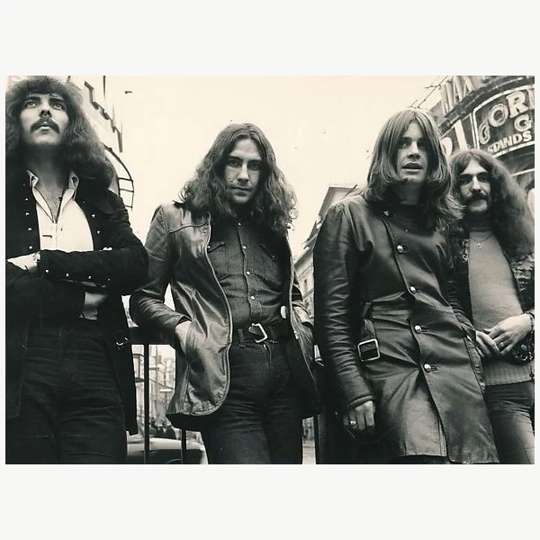
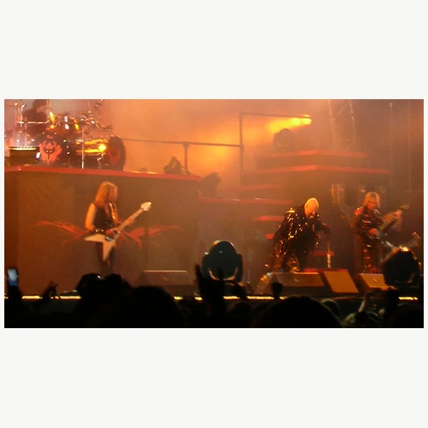
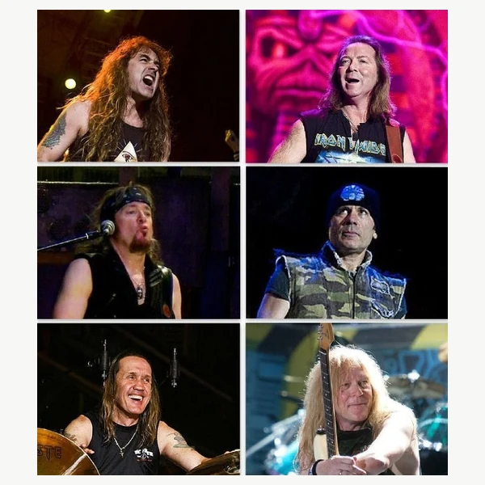
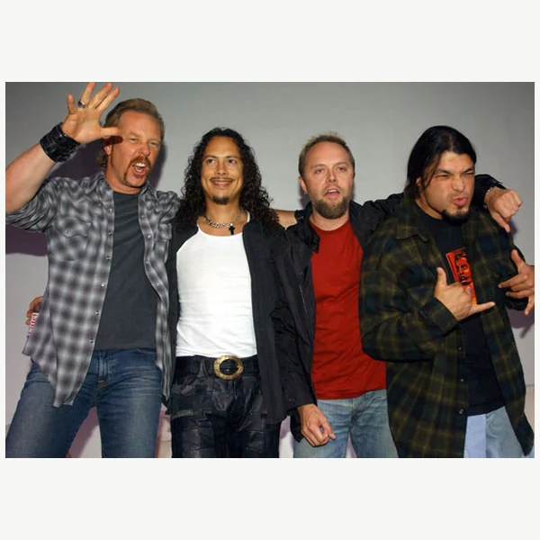
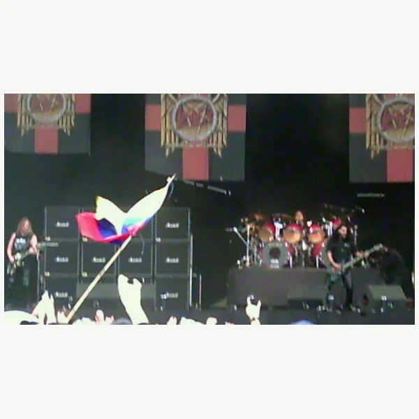
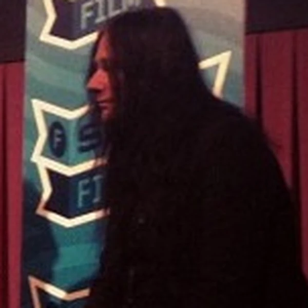
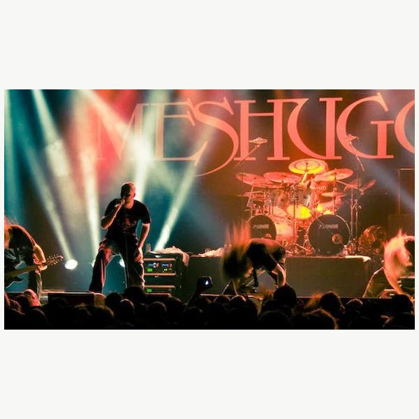

Metal is a branch of Rock music built around powerful guitar riffs and a deliberately heavy sound. It began taking shape in the late 1960s, when amplified Blues Rock and Psychedelic Rock were being pushed towards darker tones and harder rhythms. Distorted guitars are central to much of the genre, but heaviness does not always mean playing as loudly or quickly as possible. Some Metal is fast and tightly controlled, while other styles slow everything down and let a single riff carry the weight. The music can be melodic or abrasive, and its lyrics are just as varied as its sound. Over time, Metal has developed into a large family of styles that do not necessarily have much in common beyond their approach to intensity. That has never made the boundaries especially easy to agree on. Fans can spend as much time debating whether something counts as Metal as they do listening to it.
The term Heavy Metal was around long before it became the name of a musical genre. In ordinary English, metal suggested something hard or weighty, and descriptions of heavy Rock were already common by the late 1960s. During the early 1970s, music writers began using Heavy Metal more regularly for a particular kind of forceful guitar music. It did not suddenly appear as an agreed category, and researchers still debate exactly how the expression took hold. Bands that are now considered central to early Metal were often described simply as Hard Rock at the time. As the sound developed, the name became a useful way to separate it from the increasingly broad Rock mainstream. Later labels such as Thrash Metal and Doom Metal identified different approaches within the genre. The word heavy has remained remarkably flexible, which is convenient when every generation seems determined to make the previous one sound restrained.
Metal emerged in Britain and the United States around the end of the 1960s. Musicians were working with the amplified sound of Blues Rock and Psychedelic Rock, but some began giving more attention to thick riffs and an atmosphere that was less concerned with the easygoing side of the counterculture. By the early 1970s, a recognisable style had developed, although the line between Metal and Hard Rock was still far from clear. A new wave of British groups later brought greater speed and precision to the music, helping to establish the sound that shaped much of the 1980s. Thrash Metal took that momentum further, while other scenes developed slower or more extreme approaches. Metal also became a global genre rather than a largely British and American one, with local movements developing their own identities. Some styles entered the charts and others stayed firmly underground. The history is less a straight line towards greater heaviness than a continuing argument about what heaviness should actually mean.
The guitar riff is one of the main building blocks of Metal. Rather than simply accompanying a melody, a repeated guitar pattern often gives a piece its shape and determines how the drums and bass move around it. Distortion makes individual notes sound thicker and more abrasive, while lower guitar tunings can add further weight. The rhythm section matters just as much as the guitars. Drummers may reinforce a slow, deliberate pulse or use rapid double bass patterns to drive the music forward. Vocals range from clear singing to harsh techniques that treat the voice almost like another instrument. Metal also makes room for extended instrumental passages and sudden changes in tempo. None of these features applies equally to every style. A slow Doom Metal piece and a fast Thrash Metal piece can sound remarkably different, yet both use rhythm and amplified texture to create a sense of force. Volume helps, of course, but it is not the whole explanation.







Metal built a lasting culture around music that was frequently dismissed by mainstream critics and broadcasters. Fans supported local venues and independent labels, allowing underground scenes to connect across national borders long before online communities made that straightforward. The genre also became an easy target during the moral panics of the 1980s, when its imagery and lyrics were blamed for wider anxieties about young people. Arguments about censorship often treated disturbing subject matter as proof of real world harm, which spared critics the trouble of engaging with what musicians were actually saying. Metal could give listeners a way to discuss fear, alienation and distrust of authority, although its scenes were hardly free from their own prejudices. Ideas about masculinity and authenticity sometimes made participation harder for women and other outsiders. Those attitudes have also been challenged from within. Metal's worldwide development shows that its culture is not fixed, even if some fans would prefer to keep it exactly as they remember it.